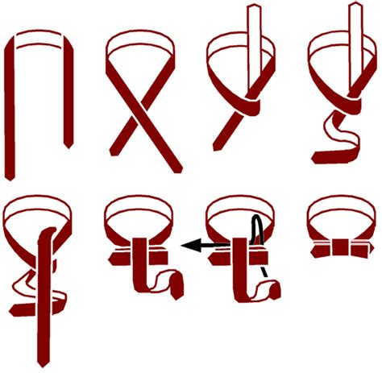

About Us
Bowties can take a lot longer to adjust and get just right after tying the knot, so be patient with yourself

This image guide will help you be able to tie the knot correctly, once you finish, fiddle with the legnths until it looks correct.
